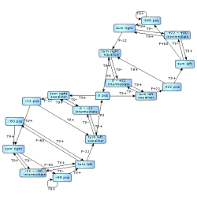
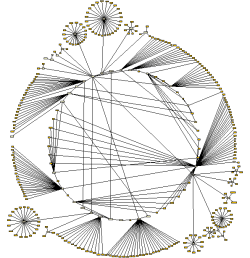
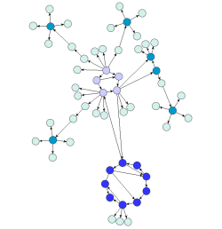

| Circular Layout | ||
|---|---|---|
| Prev | Chapter 5. Automatic Graph Layout | Next |
Class CircularLayouter is a
layout algorithm that portraits interconnected ring and star topologies and is
excellent for applications in:
is a
layout algorithm that portraits interconnected ring and star topologies and is
excellent for applications in:
CircularLayouter produces layouts that emphasize group and tree structures
within a network.
It creates node partitions by analyzing the connectivity structure of the
network, and arranges the partitions as separate circles.
The circles themselves are arranged in a radial tree layout fashion.
CircularLayouter delegates these two major layout tasks to other, more
specialized layout providers, namely classes
SingleCycleLayouter and
BalloonLayouter
and
BalloonLayouter .
.
Figure 5.23. Sample layouts produced by class CircularLayouter
|

|

|

|
| This diagram shows finite state automaton from an industrial application. | This diagram represents a host hierarchy defined within a NIS (Network Information Service) system. | This diagram demonstrates the attainable compactness, while keeping the number of object overlaps at a minimum. |
Class CircularLayouter knows a number of data provider keys which are used to retrieve supplemental layout data for a graph's elements. The data is bound to the graph by means of a data provider, which is registered using a given look-up key. Table 5.22, “Data provider look-up keys” lists all look-up keys for CircularLayouter.
Binding supplemental layout data to a graph is described in the section called “Providing Supplemental Layout Data”.
Table 5.22. Data provider look-up keys
| Key | Element Type | Value Type | Description |
|---|---|---|---|
| CIRCULAR_CUSTOM_GROUPS_DPKEY |
Node | Object | For each node an arbitrary Object indicating the group it is affiliated with. |
| CIRCLE_ID_HOLDER_DPKEY |
Node | IntValueSettable |
For each node an IntValueSettable |
| NODE_HALO_DPKEY |
Node | NodeHalo |
A NodeHalo |
| ABORT_HANDLER_DPKEY |
Graph | AbortHandler |
An AbortHandler |
Class CircularLayouter provides a set of options that affect its layout
behavior.
These options can be set using the setter methods of class CircularLayouter.
The options are documented within the API documentation of class
CircularLayouter .
.
Additionally, there are getter methods that grant access to the layout
delegates SingleCycleLayouter and BalloonLayouter
and BalloonLayouter .
These layouters are responsible for arranging the circle and the tree
components of the diagram, respectively.
Modifying the options of these layout algorithms does also affect the overall
layout behavior of CircularLayouter.
.
These layouters are responsible for arranging the circle and the tree
components of the diagram, respectively.
Modifying the options of these layout algorithms does also affect the overall
layout behavior of CircularLayouter.
The options for CircularLayouter affect the general layout strategy and the interplay between SingleCycleLayouter and BalloonTreeLayouter.
The global layout style is set using the
setLayoutStyle(byte) method.
It controls which policy is used to partition the nodes of the graph.
Each node partition will be arranged either on a separate circle or as a
separate "disk" (see also
node partition layout style
below).
Available options are
method.
It controls which policy is used to partition the nodes of the graph.
Each node partition will be arranged either on a separate circle or as a
separate "disk" (see also
node partition layout style
below).
Available options are
BCC_COMPACT |
|
| Description | Each partition will represent a so-called biconnected component of the graph. A biconnected component consists of nodes that are reachable by two edge-disjoint paths. Nodes that belong to more than one biconnected component will be assigned exclusively to one partition. |
BCC_ISOLATED |
|
| Description | Node partitions will be formed as with "BCC Compact" with the difference that all nodes belonging to more than one biconnected component will be assigned an isolated partition. |
SINGLE_CYCLE |
|
| Description | All nodes will be arranged on a single circle. |
CIRCULAR_CUSTOM_GROUPS |
|
| Description |
The node partitions that form circles will be given by the user.
To specify the partitions, a data provider holding such supplemental layout
data must be bound to the graph.
The data provider is expected to be registered with the graph using key
CIRCULAR_CUSTOM_GROUPS_DPKEY |
Figure 5.24, “Effect of option Layout Style” shows the effect of different layout styles applied to CircularLayouter. The BCC styles partition the nodes by examing the two-connectivity property of the input graph. SINGLE_CYCLE places all nodes one a single cycle.
| Use Existing Drawing as Sketch | |
| API | void setFromSketchModeEnabled(boolean enabled) |
| Description | If enabled, the layout algorithm interprets the initial graph layout as a sketch for the desired outcome of the layout process. The algorithm tries to identify the nodes that should lie on a node partition's circle/disk boundary and maintain their cyclic order around the center of the node partition. (See also the section called “Partition Arrangement Options” below.) Additionally, when layout style BCC Compact is used, the layout algorithm also tries to maintain the cyclic order of entire node partitions that connect to a common node. |
As an option, CircularLayouter can return the circle index for every node when the
graph has a data provider registered with it that can be looked up using the key
CIRCLE_ID_HOLDER_DPKEY .
The data provider is expected to hold IntValueSettable implementations, which are
retrieved and used to store the circle indices after layout calculation.
.
The data provider is expected to hold IntValueSettable implementations, which are
retrieved and used to store the circle indices after layout calculation.
| Node Partition Layout Style | |
| API | void setPartitionLayoutStyle(byte partitionLayoutStyle) |
| Description |
Determines the layout style for the node partitions of a graph. The nodes from a partition can be arranged either as a circle or using one of the available "disk" flavors:
|
Both disk arrangement styles result in graph layouts that are smaller in size, i.e., consume less space than circle arrangement style. Figure 5.25, “Node partition layout styles” presents the available node partition layout styles and their effects for a given graph.
The options for the
internally used SingleCycleLayouter influence the size and compactness of the circles/disks formed by this
layouter.
influence the size and compactness of the circles/disks formed by this
layouter.
| Minimal Node Distance | |
| API | void setMinimalNodeDistance(int distance) |
| Description | Determines the minimal distance between the borders of two adjacent nodes on the circle/the disk's boundary. The smaller the distance, the more compact the resulting layout. |
| Automatic Radius | |
| API | void setAutomaticRadius(boolean enabled) |
| Description | Whether or not to determine the radius of each circle/disk in the layout automatically. An automatically chosen radius is usually the smallest possible radius that obeys "Minimal Node Distance." |
| Fixed Radius | |
| API | void setFixedRadius(double radius) |
| Description | If "Automatic Radius" is not set, then this option determines the fixed radius for all circles/disks in the resulting layout. "Minimal Node Distance" will be ignored in this case. |
The options for the
internally used BalloonLayouter influence the compactness of the tree-like components that this layouter
produces.
The tree-like structures are the parts of the layout that are not part of the
circular arranged node groups.
influence the compactness of the tree-like components that this layouter
produces.
The tree-like structures are the parts of the layout that are not part of the
circular arranged node groups.
| Preferred Child Wedge | |
| API | void setPreferredChildWedge(int wedgeAngle) |
| Description |
This setting determines the angular range of the sector that will be reserved for the children of a root node. The possible angular range lies between 1 and 359. The remaining angular range (360 minus x) will be automatically used to accommodate the edge that connects to the root node. The smaller the chosen value, the greater the impression that the nodes drive away from their root nodes and the center of the graph. Generally speaking, the compactness of the layout will decrease with smaller values. Very small values will lead to layouts that consume a lot of space. |
| Minimal Edge Length | |
| API | void setMinimalEdgeLength(int length) |
| Description | Determines the minimal length of an edge that connects two nodes that lie on separate circles (tree-edges). The smaller the chosen value, the more compact the resulting layout. |
| Compactness Factor | |
| API | void setCompactnessFactor(double factor) |
| Description | This parameter influences the length of the tree-edges as it is computed by the layouter. The smaller the compactness factor, the shorter the tree-edges and the more compact the overall layout. The bigger the compactness factor the more difficult, and hence slower, the layout computation. |
| Allow Overlaps | |
| API | void setAllowOverlaps(boolean allow) |
| Description | If activated, this option further increases compactness of the resulting layout, but potentially introduces slight node overlaps. |
The following tree arrangement options which also influence the compactness are set directly on the CircularLayouter.
| Maximal Deviation Angle | |
| API | void setMaximalDeviationAngle(int deviationAngle) |
| Description |
Whenever tree edges connect to a node that lies on a circle together with other nodes, the layouter tries to direct that edge in such a way that its prolongation crosses through the center of the circle. This is not always possible though, for example, if more than one tree-edge connect to the same circle node. This parameter determines the allowed angular deviation from the optimal edge direction as described above. The bigger the chosen value, the more compact the resulting layout. If a value smaller than 90 degrees is chosen, then the tree-edges might cross through the circular arranged components. |
| Place Children on Common Radius | |
| API | void setPlaceChildrenOnCommonRadiusEnabled(boolean enabled) |
| Description |
Enables tighter drawings by using adapted radii for child nodes. By default, the nodes in tree-like structures connecting to a circle are always placed on a common radius according to their distance from the root node. Tighter drawings can be achieved by abandoning the common radius and instead placing these child nodes using radii adapted to the size of an actual child node and the sizes of nodes in its vicinity. |
Figure 5.26, “Child node placement in tree structures” shows a circular layout using the default setting and the result of using adapted radii for the nodes in tree-like structures connecting to a circle. Note that the circle(s) themselves are left unaltered.
Edge labels can be placed automatically using the generic labeling support as described in the section called “Generic Labeling”, which is available with all yFiles layout algorithms. Additionally, CircularLayouter can be set up to take node labels into account during layout.
CircularLayouter provides support for node label-aware circular layout. Node labels do not need to be placed, but instead their size needs to be considered for the placement of adjacent graph elements. Taking node labels into consideration during layout calculation guarantees that they will not overlap nodes in the diagram.
void setConsiderNodeLabelsEnabled(boolean enabled) |
|
| Description | Enables node label-aware layout calculation. |
Figure 5.27, “Node label-aware circular layout” shows a circular layout where node labels were not considered at all, and the result with node label-aware layout. The circles grow to accommodate the sizes of the node labels.
CircularLayouter by default supports node halos as soon as they are declared using
the data provider key NODE_HALO_DPKEY .
It considers any specified additional paddings around nodes, however, due to the
straight-line routing of the edges, they can cross through these areas in the resulting
diagram.
Also, node halo overlaps may occur if the internally used BalloonLayouter allows
overlapping nodes.
.
It considers any specified additional paddings around nodes, however, due to the
straight-line routing of the edges, they can cross through these areas in the resulting
diagram.
Also, node halo overlaps may occur if the internally used BalloonLayouter allows
overlapping nodes.
Layout module CircularLayoutModule.java presents the setup of class CircularLayouter in an application context.
There are several options that have impact on the compactness of the circular layout. Optimizing for compactness, e.g., is achieved by
Figure 5.28, “Increasing layout compactness” shows the cumulative effect on layout compactness when changing the settings of the layouter.
|
Copyright ©2004-2015, yWorks GmbH. All rights reserved. |